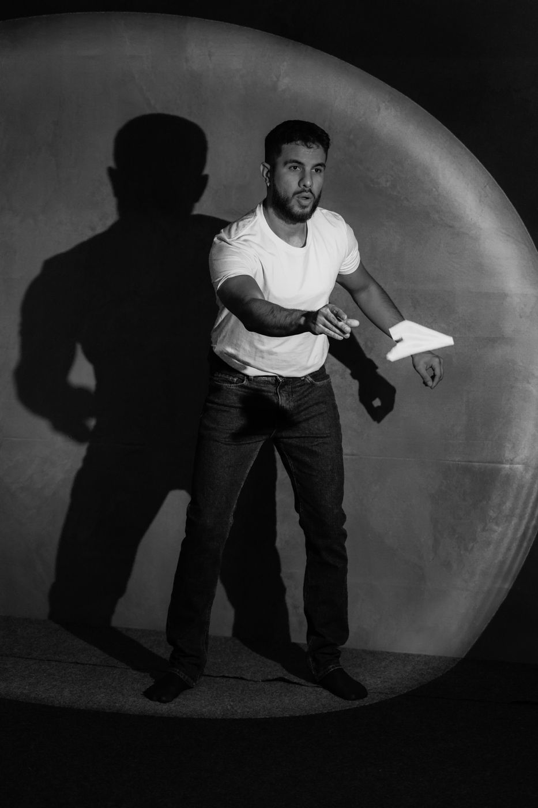
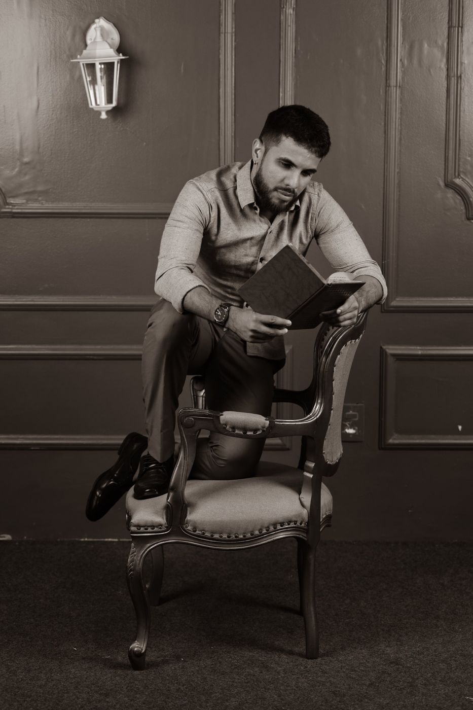
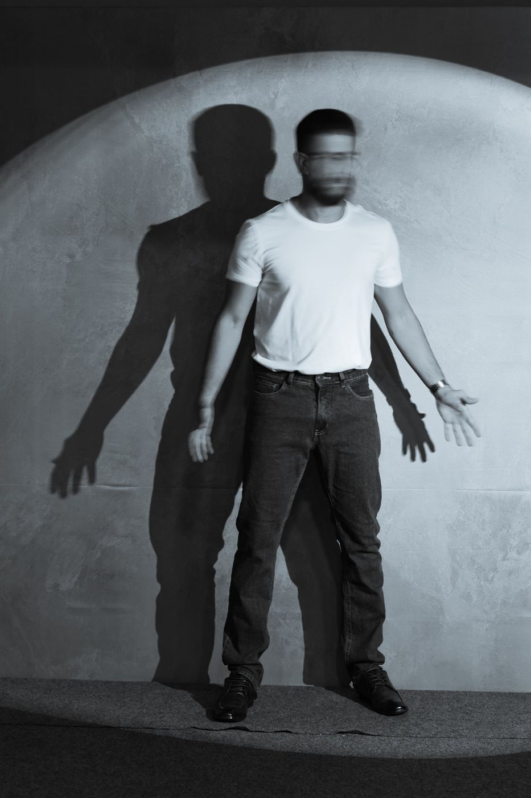
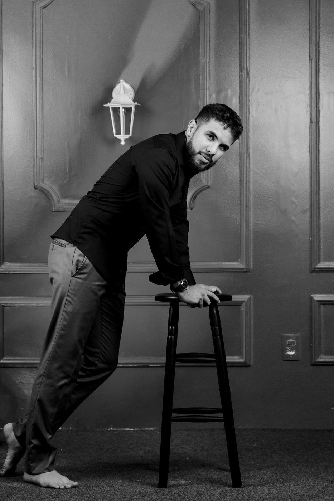
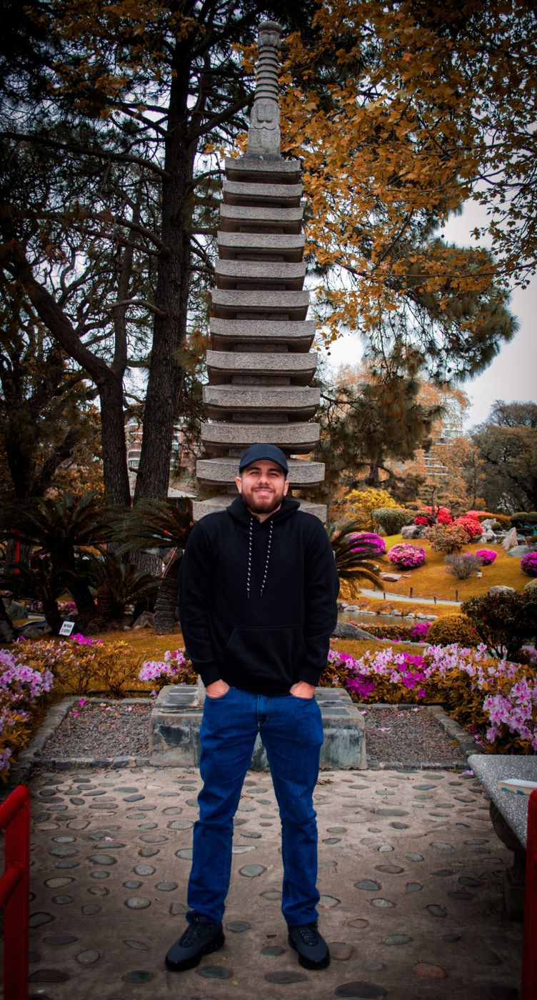
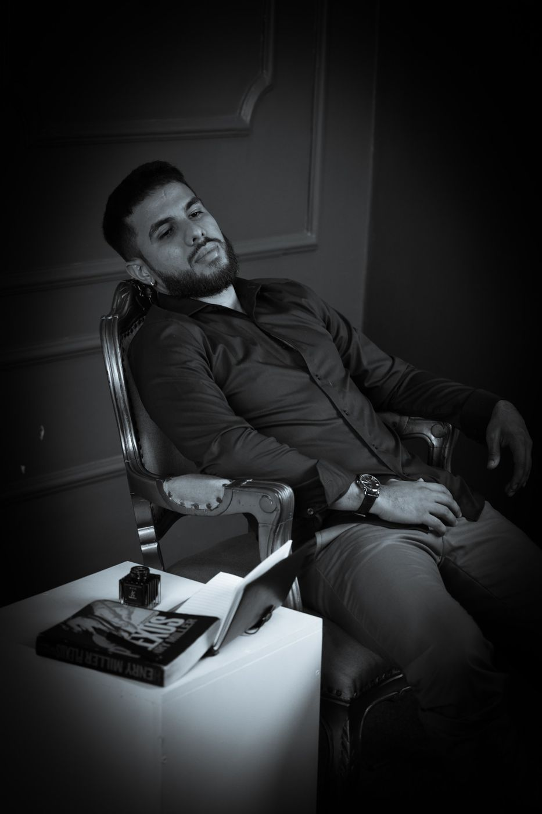
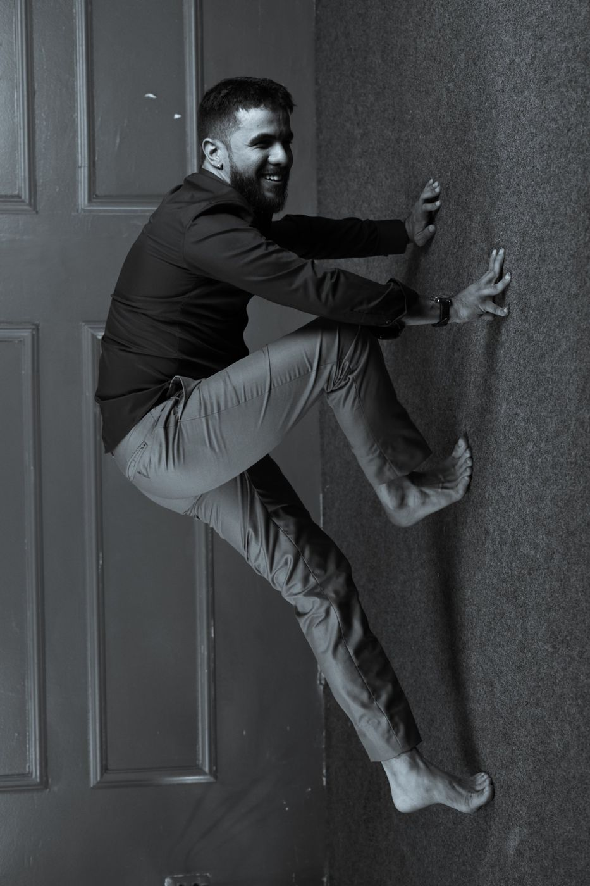
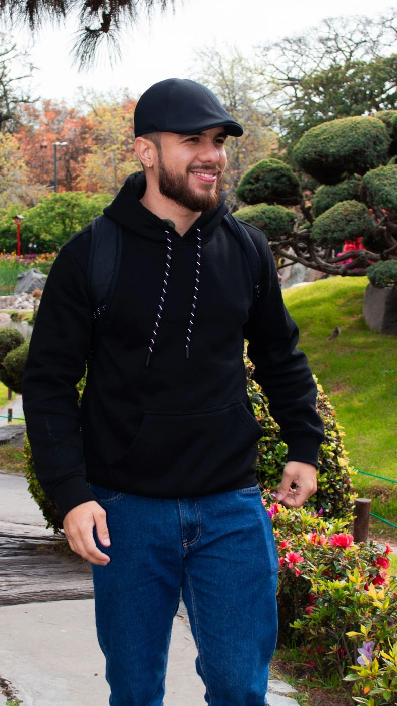
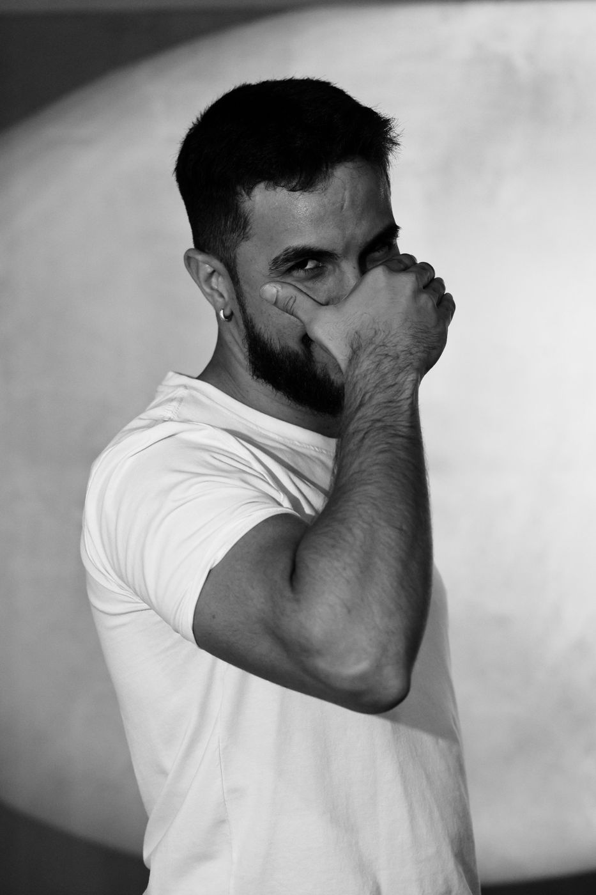

Sobre
Gabriel Vinícius, o Vinik.
Vinik nasceu no interior do Maranhão. Criava mundos e personagens desde criança; começou a escrever aos 12 anos, terminou o primeiro livro aos 18 e publicou aos 25.
É escritor e atleta, dez vezes medalhista estadual no atletismo. Graduado em Análise de Sistemas, cursa Educação Física e é ex-militar do Exército Brasileiro.
Publicou de forma independente 60 Milhas – A história de Eddie em novembro de 2024. O livro foi lido e apreciado por José Sarney, imortal da Academia Brasileira de Letras. Em 2026 veio o suspense Semente do Escárnio. Somados, os livros já passam de 4 mil exemplares vendidos.
Tem várias histórias em desenvolvimento e é caminhando que encontra ideias para escrever. Apaixonado por filosofia, acredita que todo ser humano deveria, ao menos uma vez na vida, ler Platão.

Galeria
Ensaio








Para imprensa e eventos
Kit de imprensa
Gabriel Vinícius, o Vinik, é escritor e atleta maranhense. Autor de 60 Milhas – A história de Eddie (2024) e do suspense Semente do Escárnio (2026), com mais de 4 mil livros vendidos. Foi finalista do Concurso de Prosa e Poesia da Universidade Estadual do Maranhão (UEMA). Teve o conto É disso que eu lembro selecionado no I Concurso Literário “Memórias e Vozes do Maranhão”, da Defensoria Pública do Estado do Maranhão.
Bio curta para divulgaçãoFotos em alta resolução. Abra a imagem e salve.